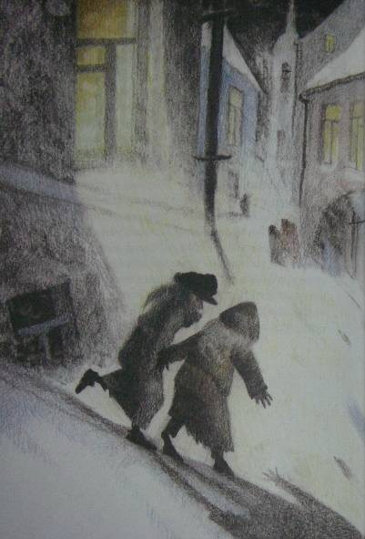

Содержание
Следующий рассказ не есть плод досужего вымысла. Все описанное мною действительно произошло в Киеве лет около тридцати тому назад и до сих пор свято, до мельчайших подробностей, сохраняется в преданиях того семейства, о котором пойдет речь. Я с своей стороны лишь изменил имена некоторых действующих лиц этой трогательной истории да придал устному рассказу письменную форму.
— Гриш, а Гриш! Гляди-ка поросенок-то... Смеется... Да-а. А во рту-то у него!.. Смотри, смотри... травка во рту, ей-богу, травка!.. Вот штука-то!
И двое мальчуганов, стоящих перед огромным, из цельного стекла, окном гастрономического магазина, принялись неудержимо хохотать, толкая друг друга в бок локтями, но невольно приплясывая от жестокой стужи. Они уже более пяти минут торчали перед этой великолепной выставкой, возбуждавшей в одинаковой степени их умы и желудки. Здесь, освещенные ярким светом висящих ламп, возвышались целые горы красных крепких яблоков и апельсинов; стояли правильные пирамиды мандаринов, нежно золотившихся сквозь окутывающую их папиросную бумагу; протянулись на блюдах, уродливо разинув рты и выпучив глаза, огромные копченые и маринованные рыбы; ниже, окруженные гирляндами колбас, красовались сочные разрезанные окорока с толстым слоем розоватого сала... Бесчисленное множество баночек и коробочек с солеными, вареными и копчеными закусками довершало эту эффектную картину, глядя на которую оба мальчика на минуту забыли о двенадцатиградусном морозе и о важном поручении, возложенном на них матерью, — поручении, окончившемся так неожиданно и так плачевно.
Старший мальчик первый оторвался от созерцания очаровательного зрелища. Он дернул брата за рукав и произнес сурово:
— Ну, Володя, идем, идем... Нечего тут...
Одновременно подавив тяжелый вздох (старшему из них было только десять лет, и к тому же оба с утра ничего не ели, кроме пустых щей) и кинув последний влюбленно-жадный взгляд на гастрономическую выставку, мальчуганы торопливо побежали по улице. Иногда сквозь запотевшие окна какого-нибудь дома они видели елку, которая издали казалась громадной гроздью ярких, сияющих пятен, иногда они слышали даже звуки веселой польки... Но они мужественно гнали от себя прочь соблазнительную мысль: остановиться на несколько секунд и прильнуть глазком к стеклу.
По мере того как шли мальчики, все малолюднее и темнее становились улицы. Прекрасные магазины, сияющие елки, рысаки, мчавшиеся под своими синими и красными сетками, визг полозьев, праздничное оживление толпы, веселый гул окриков и разговоров, разрумяненные морозом смеющиеся лица нарядных дам — все осталось позади. Потянулись пустыри, кривые, узкие переулки, мрачные, неосвещенные косогоры... Наконец они достигли покосившегося ветхого дома, стоявшего особняком; низ его — собственно подвал — был каменный, а верх — деревянный. Обойдя тесным, обледенелым и грязным двором, служившим для всех жильцов естественной помойной ямой, они спустились вниз, в подвал, прошли в темноте общим коридором, отыскали ощупью свою дверь и отворили ее.
Уже более года жили Мерцаловы в этом подземелье. Оба мальчугана давно успели привыкнуть и к этим закоптелым, плачущим от сырости стенам, и к мокрым отрепкам, сушившимся на протянутой через комнату веревке, и к этому ужасному запаху керосинового чада, детского грязного белья и крыс — настоящему запаху нищеты. Но сегодня, после всего, что они видели на улице, после этого праздничного ликования, которое они чувствовали повсюду, их маленькие детские сердца сжались от острого, недетского страдания. В углу, на грязной широкой постели, лежала девочка лет семи; ее лицо горело, дыхание было коротко и затруднительно, широко раскрытые блестящие глаза смотрели пристально и бесцельно. Рядом с постелью, в люльке, привешенной к потолку, кричал, морщась, надрываясь и захлебываясь, грудной ребенок. Высокая, худая женщина, с изможденным, усталым, точно почерневшим от горя лицом, стояла на коленях около больной девочки, поправляя ей подушку и в то же время не забывая подталкивать локтем качающуюся колыбель. Когда мальчики вошли и следом за ними стремительно ворвались в подвал белые клубы морозного воздуха, — женщина обернула назад свое встревоженное лицо.
— Ну? Что же? — спросила она отрывисто и нетерпеливо.
Мальчики молчали. Только Гриша шумно вытер нос рукавом своего пальто, переделанного из старого ватного халата.
- Отнесли вы письмо?.. Гриша, я тебя спрашиваю, отдал ты письмо?
— Отдал, — сиплым от мороза голосом ответил Гриша.
— Ну, и что же? Что ты ему сказал?
— Да все, как ты учила. Вот, говорю, от Мерцалова письмо, от вашего бывшего управляющего. А он нас обругал: «Убирайтесь вы, говорит, отсюда... Сволочи вы...»
— Да кто же это? Кто же с вами разговаривал?.. Говори толком, Гриша!
— Швейцар разговаривал... Кто же еще? Я ему говорю: «Возьмите, дяденька, письмо, передайте, а я здесь внизу ответа подожду». А он говорит: «Как же, говорит, держи карман... Есть тоже у барина время ваши письма читать...»
— Ну, а ты?
— Я ему все, как ты учила, сказал: «Есть, мол, нечего... Матушка больна... Помирает...» Говорю: «Как папа место найдет, так отблагодарит вас, Савелий Петрович, ей-богу, отблагодарит». Ну, а в это время звонок как зазвонит, как зазвонит, а он нам и говорит: «Убирайтесь скорее отсюда к черту! Чтобы духу вашего здесь не было!..» А Володьку даже по затылку ударил.
- А меня он по затылку, — сказал Володя, следивший со вниманием за рассказом брата, и почесал затылок.
Старший мальчик вдруг принялся озабоченно рыться в глубоких карманах своего халата. Вытащив, наконец, оттуда измятый конверт, он положил его на стол и сказал:
— Вот оно, письмо-то...
Больше мать не расспрашивала. Долгое время в душной, промозглой комнате слышался только неистовой крик младенца да короткое, частое дыхание Машутки, больше похожее на беспрерывные однообразные стоны. Вдруг мать сказала, обернувшись назад:
— Там борщ есть, от обеда остался... Может, поели бы? Только холодный, — разогреть-то нечем...
В это время в коридоре послышались чьи-то неуверенные шаги и шуршание руки, отыскивающей в темноте дверь. Мать и оба мальчика — все трое даже побледнев от напряженного ожидания — обернулись в эту сторону. Вошел Мерцалов. Он был в летнем пальто, летней войлочной шляпе и без калош. Его руки взбухли и посинели от мороза, глаза провалились, щеки облипли вокруг десен, точно у мертвеца. Он не сказал жене ни одного слова, она ему не задала ни одного вопроса. Они поняли друг друга по тому отчаянию, которое прочли друг у друга в глазах. В этот ужасный роковой год несчастье за несчастьем настойчиво и безжалостно сыпались на Мерцалова и его семью. Сначала он сам заболел брюшным тифом, и на его лечение ушли все их скудные сбережения. Потом, когда он поправился, он узнал, что его место, скромное место управляющего домом на двадцать пять рублей в месяц, занято уже другим.... Началась отчаянная, судорожная погоня за случайной работой, за перепиской, за ничтожным местом, залог и перезалог вещей, продажа всякого хозяйственного тряпья. А тут еще пошли болеть дети. Три месяца тому назад умерла одна девочка, теперь другая лежит в жару и без сознания. Елизавете Ивановне приходилось одновременно ухаживать за больной девочкой, кормить грудью маленького и ходить почти на другой конец города в дом, где она поденно стирала белье.
Весь сегодняшний день был занят тем, чтобы посредством нечеловеческих усилий выжать откуда-нибудь хоть несколько копеек на лекарство Машутке. С этой целью Мерцалов обегал чуть ли не полгорода, клянча и унижаясь повсюду; Елизавета Ивановна ходила к своей барыне, дети были посланы с письмом к тому барину, домом которого управлял раньше Мерцалов... Но все отговаривались или праздничными хлопотами, или неимением денег... Иные, как, например, швейцар бывшего патрона, просто-напросто гнали просителей с крыльца.
Минут десять никто не мог произнести ни слова. Вдруг Мерцалов быстро поднялся с сундука, на котором он до сих пор сидел, и решительным движением надвинул глубже на лоб свою истрепанную шляпу.
— Куда ты? — тревожно спросила Елизавета Ивановна.
Мерцалов, взявшийся уже за ручку двери, обернулся.
— Все равно, сидением ничего не поможешь, — хрипло ответил он. — Пойду еще... Хоть милостыню попробую просить.
Выйдя на улицу, он пошел бесцельно вперед. Он ничего не искал, ни на что не надеялся. Он давно уже пережил то жгучее время бедности, когда мечтаешь найти на улице бумажник с деньгами или получить внезапно наследство от неизвестного троюродного дядюшки. Теперь им овладело неудержимое желание бежать куда попало, бежать без оглядки, чтобы только не видеть молчаливого отчаяния голодной семьи.
Просить милостыни? Он уже попробовал это средство сегодня два раза. Но в первый раз какой-то господин в енотовой шубе прочел ему наставление, что надо работать, а не клянчить, а во второй — его обещали отправить в полицию.
Незаметно для себя Мерцалов очутился в центре города, у ограды густого общественного сада. Так как ему пришлось все время идти в гору, то он запыхался и почувствовал усталость. Машинально он свернул в калитку и, пройдя длинную аллею лип, занесенных снегом, спустился на низкую садовую скамейку.
Тут было тихо и торжественно. Деревья, окутанные в свои белые ризы, дремали в неподвижном величии. Иногда с верхней ветки срывался кусочек снега, и слышно было, как он шуршал, падая и цепляясь за другие ветви. Глубокая тишина и великое спокойствие, сторожившие сад, вдруг пробудили в истерзанной душе Мерцалова нестерпимую жажду такого же спокойствия, такой же тишины.
«Вот лечь бы и заснуть, — думал он,
— и забыть о жене, о голодных детях, о больной Машутке».
Просунув руку под жилет, Мерцалов нащупал довольно толстую веревку, служившую ему поясом. Мысль о самоубийстве совершенно ясно встала в его голове. Но он не ужаснулся этой мысли, ни на мгновение не содрогнулся перед мраком неизвестного.
«Чем погибать медленно, так не лучше ли избрать более краткий путь?»
Он уже хотел встать, чтобы исполнить свое страшное намерение, но в это время в конце аллеи послышался скрип шагов, отчетливо раздавшийся в морозном воздухе. Мерцалов с озлоблением обернулся в эту сторону. Кто-то шел по аллее. Сначала был виден огонек то вспыхивающей, то потухавшей сигары. Потом Мерцалов мало-помалу мог разглядеть старика небольшого роста, в теплой шапке, меховом пальто и высоких калошах. Поравнявшись со скамейкой, незнакомец вдруг круто повернул в сторону Мерцалова и, слегка дотрагиваясь до шапки, спросил:— Вы позволите здесь присесть?
Мерцалов умышленно резко отвернулся от незнакомца и подвинулся к краю скамейки. Минут пять прошло в обоюдном молчании, в продолжение которого незнакомец курил сигару и (Мерцалов это чувствовал) искоса наблюдал за своим соседом.
— Ночка-то какая славная, — заговорил вдруг незнакомец. — Морозно... тихо. Что за прелесть — русская зима!
Голос у него был мягкий, ласковый, старческий. Мерцалов молчал, не оборачиваясь.
— А я вот ребятишкам знакомым подарочки купил, — продолжал незнакомец (в руках у него было несколько свертков).
— Да вот по дороге не утерпел, сделал круг, чтобы садом пройти: очень уж здесь хорошо.
Мерцалов вообще был кротким и застенчивым человеком, но при последних словах незнакомца его охватил вдруг прилив отчаянной злобы. Он резким движением повернулся в сторону старика и закричал, нелепо размахивая руками и задыхаясь:
— Подарочки!.. Подарочки!.. Знакомым ребятишкам подарочки!.. А я... а у меня, милостивый государь, в настоящую минуту мои ребятишки с голоду дома подыхают... Подарочки!.. А у жены молоко пропало, и грудной ребенок целый день не ел... Подарочки!..
Мерцалов ожидал, что после этих беспорядочных, озлобленных криков старик поднимется и уйдет, но он ошибся. Старик приблизил к нему свое умное, серьезное лицо с седыми баками и сказал дружелюбно, но серьезным тоном:
— Подождите... не волнуйтесь! Расскажите мне все по порядку и как можно короче. Может быть, вместе мы придумаем что-нибудь для вас.
В необыкновенном лице незнакомца было что-то до того спокойное и внушающее доверие, что Мерцалов тотчас же без малейшей утайки, но страшно волнуясь и спеша, передал свою историю. Он рассказал о своей болезни, о потере места, о смерти ребенка, обо всех своих несчастиях, вплоть до нынешнего дня. Незнакомец слушал, не перебивая его ни словом, и только все пытливее и пристальнее заглядывал в его глаза, точно желая проникнуть в самую глубь этой наболевшей, возмущенной души. Вдруг он быстрым, совсем юношеским движением вскочил с своего места и схватил Мерцалова за руку. Мерцалов невольно тоже встал.
— Едемте! — сказал незнакомец, увлекая за руку Мерцалова.
— Едемте скорее!.. Счастье ваше, что вы встретились с врачом. Я, конечно, ни за что не могу ручаться, но... поедемте!
Минут через десять Мерцалов и доктор уже входили в подвал. Елизавета Ивановна лежала на постели рядом со своей больной дочерью, зарывшись лицом в грязные, замаслившиеся подушки. Мальчишки хлебали борщ, сидя на тех же местах. Испуганные долгим отсутствием отца и неподвижностью матери, они плакали, размазывая слезы по лицу грязными кулаками и обильно проливая их в закопченный чугунок. Войдя в комнату, доктор скинул с себя пальто и, оставшись в старомодном, довольно поношенном сюртуке, подошел к Елизавете Ивановне. Она даже не подняла головы при его приближении.
— Ну, полно, полно, голубушка, — заговорил доктор, ласково погладив женщину по спине.
— Вставайте-ка! Покажите мне вашу больную.
И точно так же, как недавно в саду, что-то ласковое и убедительное, звучавшее в его голосе, заставило Елизавету Ивановну мигом подняться с постели и беспрекословно исполнить все, что говорил доктор. Через две минуты Гришка уже растапливал печку дровами, за которыми чудесный доктор послал к соседям, Володя раздувал изо всех сил самовар, Елизавета Ивановна обворачивала Машутку согревающим компрессом... Немного погодя явился и Мерцалов. На три рубля, полученные от доктора, он успел купить за это время чаю, сахару, булок и достать в ближайшем трактире горячей пищи. Доктор сидел за столом и что-то писал на клочке бумажки, который он вырвал из записной книжки. Окончив это занятие и изобразив внизу какой-то своеобразный крючок вместо подписи, он встал, прикрыл написанное чайным блюдечком и сказал:
— Вот с этой бумажкой вы пойдете в аптеку... давайте через два часа по чайной ложке. Это вызовет у малютки отхаркивание... Продолжайте согревающий компресс... Кроме того, хотя бы вашей дочери и сделалось лучше, во всяком случае пригласите завтра доктора Афросимова. Это дельный врач и хороший человек. Я его сейчас же предупрежу. Затем прощайте, господа! Дай бог, чтобы наступающий год немного снисходительнее отнесся к вам, чем этот, а главное — не падайте никогда духом.
Пожав руки Мерцалову и Елизавете Ивановне, все еще не оправившимся от изумления, и потрепав мимоходом по щеке разинувшего рот Володю, доктор быстро всунул свои ноги в глубокие калоши и надел пальто. Мерцалов опомнился только тогда, когда доктор уже был в коридоре, и кинулся вслед за ним.
Так как в темноте нельзя было ничего разобрать, то Мерцалов закричал наугад:
— Доктор! Доктор, постойте!.. Скажите мне ваше имя, доктор! Пусть хоть мои дети будут за вас молиться!
И он водил в воздухе руками, чтобы поймать невидимого доктора. Но в это время в другом конце коридора спокойный старческий голос произнес:
— Э! Вот еще пустяки выдумали!.. Возвращайтесь-ка домой скорей!
Когда он возвратился, его ожидал сюрприз: под чайным блюдцем вместе с рецептом чудесного доктора лежало несколько крупных кредитных билетов...
В тот же вечер Мерцалов узнал и фамилию своего неожиданного благодетеля. На аптечном ярлыке, прикрепленном к пузырьку с лекарством, четкою рукою аптекаря было написано: «По рецепту профессора Пирогова».
Я слышал этот рассказ, и неоднократно, из уст самого Григория Емельяновича Мерцалова — того самого Гришки, который в описанный мною сочельник проливал слезы в закоптелый чугунок с пустым борщом. Теперь он занимает довольно крупный, ответственный пост в одном из банков, слывя образцом честности и отзывчивости на нужды бедности. И каждый раз, заканчивая свое повествование о чудесном докторе, он прибавляет голосом, дрожащим от скрываемых слез:
— С этих пор точно благодетельный ангел снизошёл в нашу семью. Все переменилось. В начале января отец отыскал место, матушка встала на ноги, меня с братом удалось пристроить в гимназию на казенный счет. Просто чудо совершил этот святой человек. А мы нашего чудесного доктора только раз видели с тех пор — это когда его перевозили мертвого в его собственное имение Вишню. Да и то не его видели, потому что то великое, мощное и святое, что жило и горело в чудесном докторе при его жизни, угасло невозвратимо.